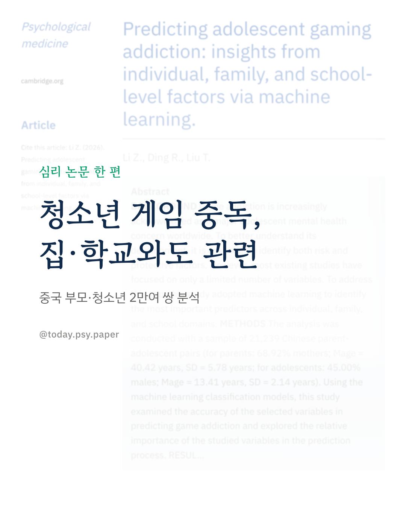
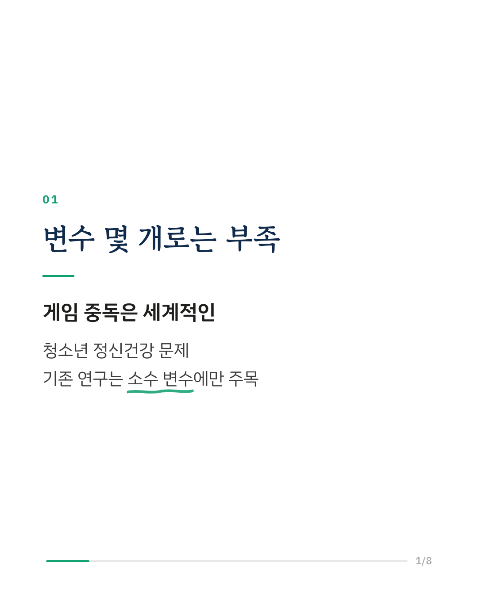
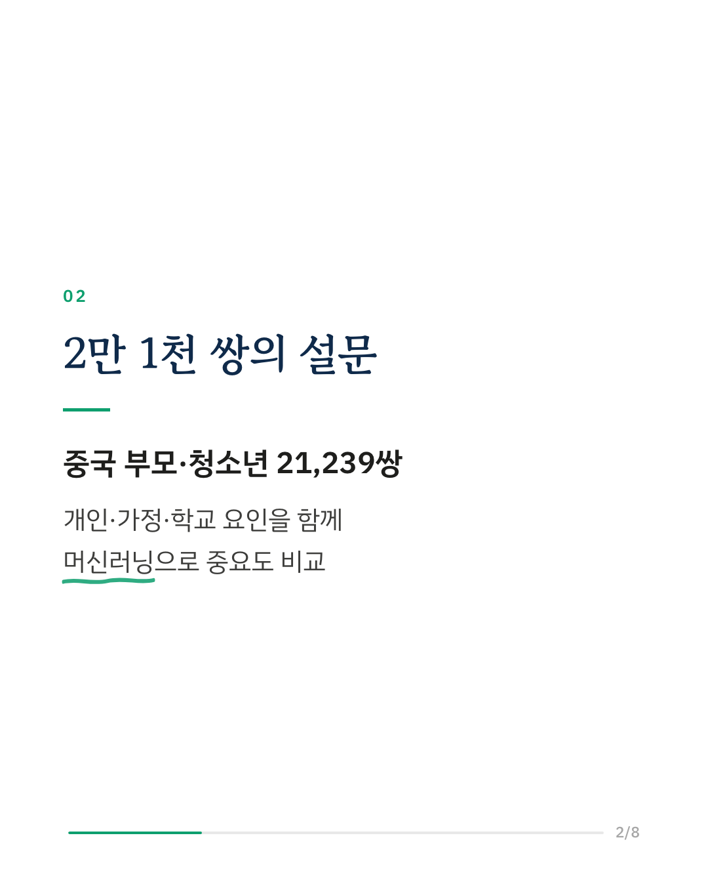
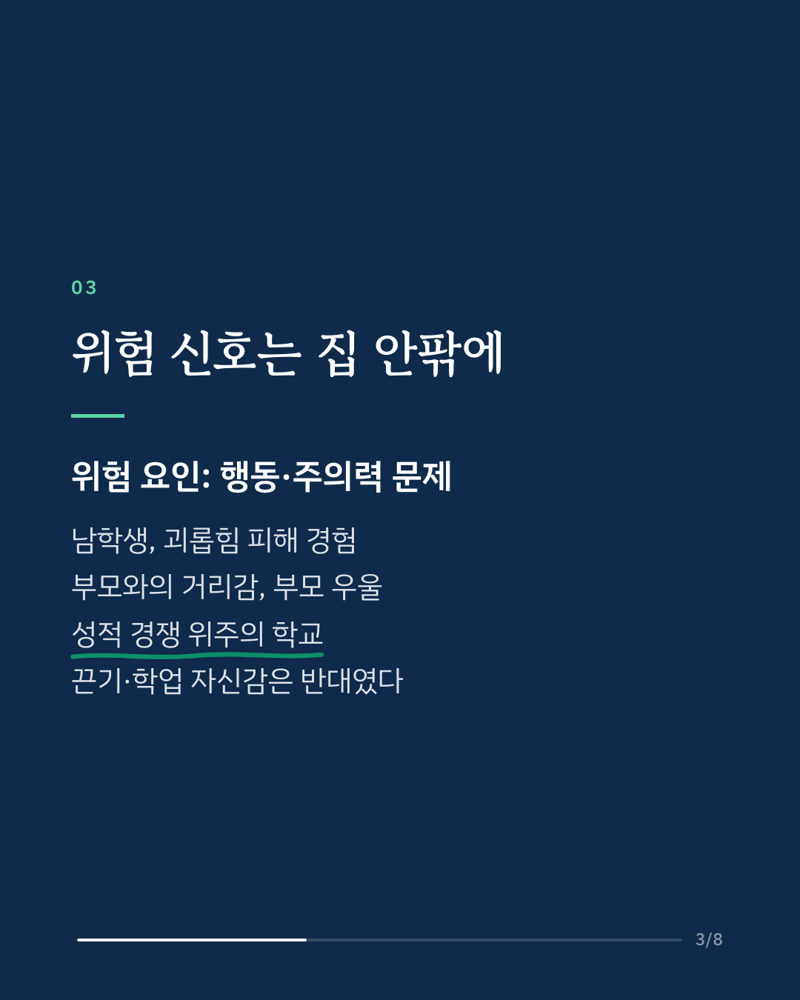
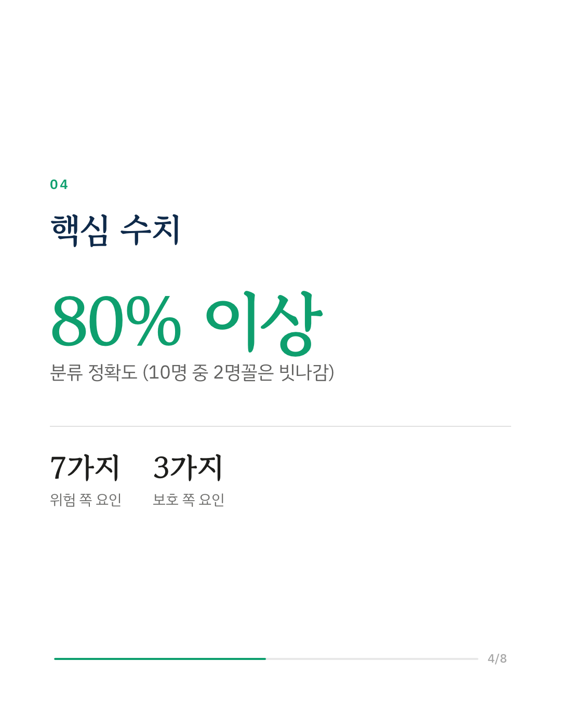
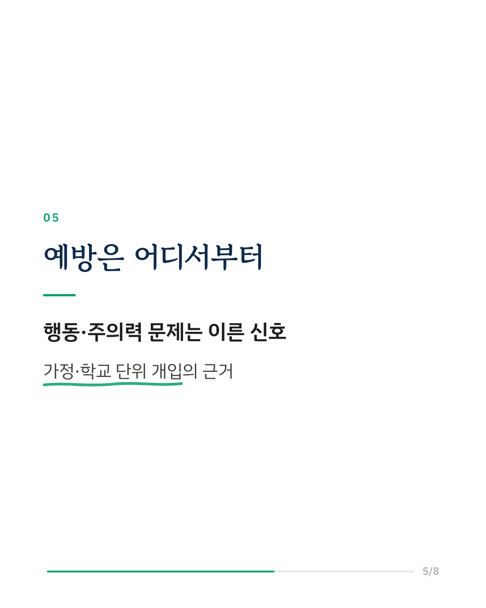
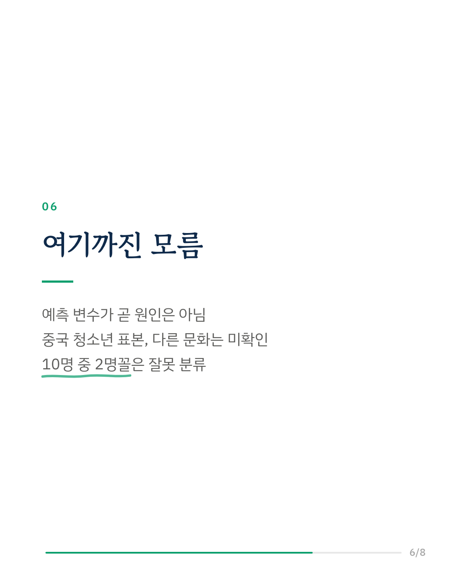
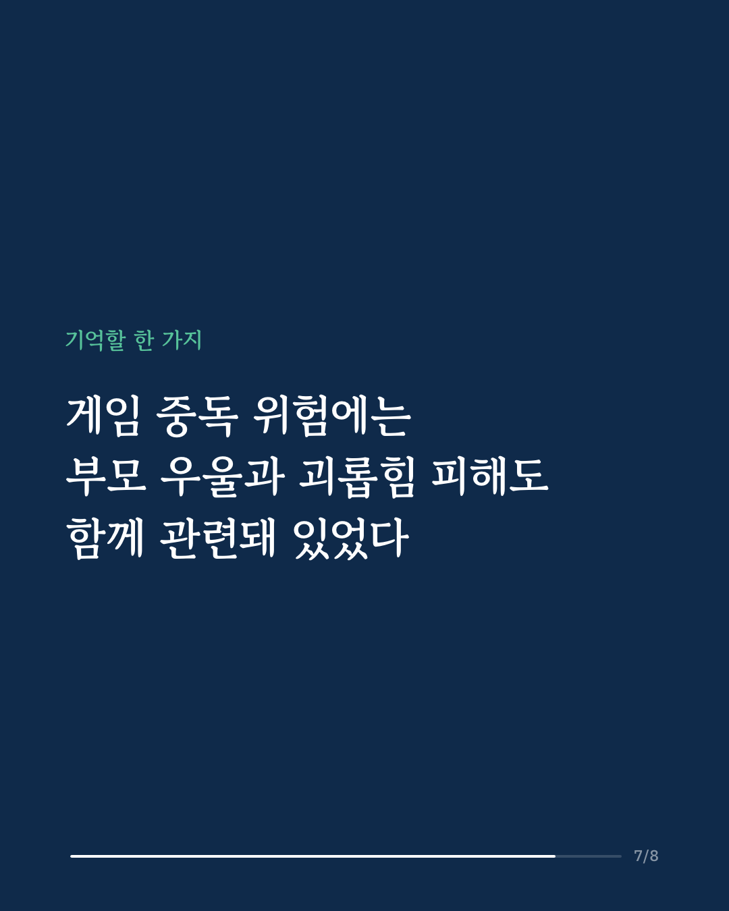
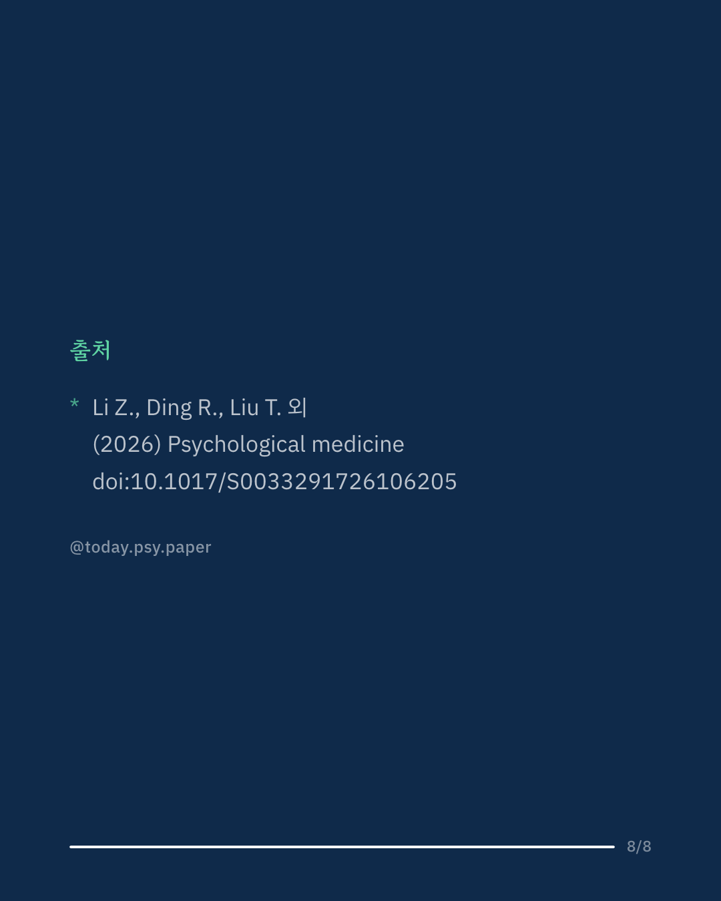

청소년 게임 중독은 개인의 자제력 문제로만 여겨지기 쉽습니다. 이 연구는 중국의 부모·청소년 21,239쌍 자료를 머신러닝으로 분석해 개인·가정·학교 요인 가운데 무엇이 게임 중독과 가장 관련 깊은지 비교했습니다. 두 가지 모델 모두 80% 이상의 정확도로 게임 중독 여부를 분류했고, 같은 요인들을 반복해서 중요하게 꼽았습니다. 위험 쪽에는 공격적 행동 같은 행동 문제와 주의력 문제, 남학생, 또래 괴롭힘 피해, 부모와의 거리감, 부모의 우울, 성적 경쟁이 심한 학교 분위기가 있었습니다. 반대로 끈기가 강하고 성적이 좋으며 공부에 자신감이 있는 청소년은 위험이 낮았습니다. 연구진은 예방과 개입을 청소년 개인뿐 아니라 가정과 학교 단위에서도 설계할 수 있다고 말합니다. 다만 이 결과는 예측에 쓰인 관련성이어서, 각 요인이 게임 중독의 원인이라고 볼 수는 없습니다. 출처: Psychological Medicine (2026), 'Predicting adolescent gaming addiction: insights from individual, family, and school-level factors via machine learning.' DOI: 10.1017/S0033291726106205 #게임중독 #청소년정신건강 #게임과몰입 #청소년상담 #임상심리 #정신건강정보 #심리학연구 #논문리뷰
python3 publish.py 42989602